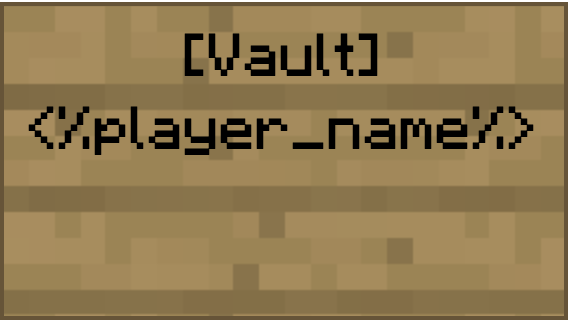

An Introduction to AirshipCraft
v2.1.0 | Documentation of the mechanics and vision of the server.
📝 Info: This document was last updated on 2023-03-06
⚠️ Warning: All information should be treated as current unless specifically told otherwise.
❓ Looking for user guides? Click here.
All information provided in this document is aimed at giving new and existing members of the development team some insight into what the AirshipCraft: Reborn (AC:R) project hopes to achieve. This document will describe every important element of the server, including its history, community, target audience, and previous issues that we have encountered in previous iterations. More importantly, the document will include suggestions as to how we can fix those issues, planned features, mechanics, and gameplay design.
This is a living document. All content regarding mechanics and gameplay is subject to change as the project progresses. New features will constantly be implemented and documented as they are developed.
See the changelog to see a list of features added/removed and/or updated.
This project utilizes SemVer for its versioning structure. The correct project version number should be displayed at the top of this page as well as at the top of the changelog.
⚠️ Warning: at the time of writing, the project is currently in major version 0, meaning there is no playable nor stable version as the project is still in its initial development stage.
A Brief History
This is the second iteration of AirshipCraft. The first iteration was produced by mjcrafter100 (now Grau_Wulf)'s original AirshipCraft in 2015. The vision for his server was little more than an SMP server inspired by Movecraft and Factions features, nothing else. Although simple, it was extremely popular and loved by many. As AirshipCraft evolved, the vision shifted to form a geopolitical server which would later be known as 'Total War'. The Total War series of Minecraft servers will continue to face its own iterations of changes, but the main focus was always some type of land-claiming plugin and Movecraft.
The early economy system was nothing more than a few chest shops found in random locations with different buy and sell prices to simulate different regional markets, encouraging players to travel around the map on “trade runs” to earn money. An archaic form of a “tech tree” was implemented, using server play time and permissions as a deciding factor in what weapons or equipment a player can access, which as you can imagine became quickly imbalanced.
AirshipCraft: Reborn (AC:R) is similar to the original AirshipCraft in that it has a heavy focus on Movecraft mechanics. However, that is where the similarities end.
Project Overview
This page will serve as an overview of the entire project. Topics which require more in-depth explanations and plans for their implementation will receive their own section. These sections can be found in the table of contents located on the left-hand side of this page.
Outline
The purpose of this project is to fulfil the vision of creating a "true" geopolitical experience in Minecraft. Although it is not based on an Earth map, the map is Earth-like enough to encourage the natural growth and creation of nation-states through either player or NPC manipulation. "Dynamic" is the key buzzword for this project.
The world, much like real-life, should feel fluid (constantly changing). The project will include dynamic market prices as a result of:
- Inflation
- Supply and demand patterns
- Wars and diplomatic actions by foreign nations
- Natural disasters
All examples listed above are features that this project will attempt to replicate in the virtual world.
A primary focus of this project is its concentration on NPCs, heavily involving them within embedded game mechanics. This is to keep gameplay constantly engaging for the end user to maximize their gameplay experience.
With NPC-controlled nation-states scattered across the map, there will always be something for the player to do. In theory, the server should be fun and playable even if the player is completely alone on the server.
The goal of the economy is to be player-driven. There should be enough incentive for players to acquire currency without there being too many obstacles in place which may serve as a potential deterrent for new players. Finding a good balance is difficult, but not impossible.
See Economy
We want to provide a server where realistic strategy, tactics, and creative thinking will allow players to get ahead. We want players to be able to own and control their own fully functioning and dynamic nations, towns and empires. We seek to find the balance between complexity and simplicity. Allowing for in-depth and complex mechanics but still being extremely player and 'noob friendly', providing a steep enough learning curve to separate the good players from the amateurs in a wider degree of aspects than just raw Minecraft skill.
Although AirshipCraft was never traditionally marketed as a “roleplay” server (and still technically isn’t), we are taking steps to emulate a form of “roleplay” environment to immerse players in this new world we are building. This includes the writing of lore, the creation of a quest system, player cards and other things that promote roleplay. Roleplay is highly encouraged but will not be enforced as it should be allowed to occur naturally.
Game Design
This project is designed with the mindset of building a game. The goal is to design and implement gameplay elements that foster player engagement and boost player retention. Although the server is designed so it can be fun without being populated, it's mutually beneficial for all parties if there is an established player base.
This graph outlines a player’s skill vs. difficulty:

Note: this shows three difficulty levels and how players react to them based on their skills. Also, note that the blue line enters all three boxes, which is important to get the most players interested in the gameplay.
By itself, this means nothing. However, combine it with this graph:

This shows that, in the median, player interest is tied to efficacy. In other words, the better you are at something, the more you’re interested. The interest rate drops according to standard deviations from the median difficulty line as shown in the first graphic.
The full meaning of both of these graphs isn't realized until we look at this next graph:

This graph shows that as you move across difficulty levels, you engage players. This implies you have a game that can watch a player’s reactions and scale difficulty based on their performance. The AI needs to constantly move between the optimal challenge line, and the blue line in the first graph. It is based on these assumptions:
- One cannot design a difficulty that is perfect for everyone.
- Therefore, we must move the player above and below the difficulty line using rewards.
- The best way to do this is to provide multiple reward types that cater to different styles of play.
Rather than categorize players as high-skill vs. low-skill, attenuate the game to make players feel highly skilled and low-skilled. Both levels serve a purpose, as graph 3 shows. Note that the stuff in the quotation marks in graph 3 are the negatives of this mode.
Given this, we think of the following as guiding principles:
- As players move above the optimal challenge line, they feel high satisfaction.
- Keep them there too long and they quickly devolve into more negative feelings about the play being ‘too easy’ or ‘childish’.
- As players move below the optimal challenge line, it leads to a high player effort to succeed.
- Here the positive emotions of challenge and excitement are balanced by the negative pitfalls of it being ‘too hard’ or ‘frustrating’. You can’t keep them here too long either.
- The key to successful engagement is to move players across this line using a rewards system that caters to both high satisfaction (ranks, levels, recognition, Right Brain motivators) and high effort (items, upgrades, bonuses, Left Brain motivators).
And finally, again:
- No two people are the same, so there is no true ‘optimal challenge line’. It is a construct used to understand from measurements when to make hurdles harder or easier based on individual player performance.
This is one way to deal with player engagement and create addiction. Great games closely adhere to the ‘Optimal Challenge Line’ as created by each player’s skill and use the Octalysis drivers to push players back and forth across the line.
Octalysis is a great breakdown of player motivations by Yu-Kai Chou. We can use the drivers here to motivate high-satisfaction and high-effort players, as each responds differently.
This is beautifully captured in this graphic:

The graph is a very good guide on what should be kept in mind when proceeding with the development of the server/project. We can, however, for the sake of simplicity, focus mainly on the key points of the graph.
- Progress:
- As players advance in the game, they should feel a sense of accomplishment. Clear objectives, like levelling up different skills or tech trees, unlocking new items or abilities, or things such as making the world more "exploration worthy" can help achieve this.
- Feedback:
- Players must receive immediate feedback on their actions, such as points earned or money earned, in order to improve gameplay and keep them engaged.
- Difficulty:
- The game should be challenging enough to be engaging without being too difficult to the point where players give up in frustration.
- Social:
- Replayability:
- The game should entice players to return and play it repeatedly. Randomly generated content, an immersive and dynamic world, and other event-like activities and objectives can help accomplish this.
A good storyline can engage players and make them want to keep playing to see what happens next. We aim to accomplish this by providing multiple quest lines that have benefits and impacts on the player who chooses to complete them and possibly (slight) drawbacks to those who don't, in order to gently nudge players to keep playing and trying different things.
Philosophy
It's important to maintain a commonly shared philosophy when designing or working on mechanics. The general mantra is to add quality of life (QOL) improvements to the player whenever possible. If we are able to streamline the boring, basic, vanilla mechanics and make it very easy, or in some cases automated, for the player, the player can focus on the unique, more interesting and "fun" mechanics we have designed for them.
If a player sits and has to mine or farm for resources manually for everything they need, then they will only spend about 1/4th or less of their time actually playing the game, since 3/4ths of it would be spent grinding. Try to limit unnecessary grinds.
Designing any sort of progression system or mechanic that requires players to put in the effort is good (as we have stated before in the previous section), however, there's a difference between challenging and time-consuming and we want to limit time-consuming whenever possible.
Purpose of These Docs
This documentation serves as a guide to potential/future developers who have graciously volunteered or have been brought on to the team to work on AirshipCraft.
Planned features which are outlined and explained in any of the subsections to the left of this page might include a note at the top of the page such as:
Currently unimplemented.
Implemented as of YYYY-MM-DD.
Currently being developed as of YYYY-MM-DD.
These notes give a sort of status indication of what features have been added, which are currently being worked on, and what features have not been implemented at all.
Written by:
Zeyad “zune” Rashed,
Head Developer and Project Manager
AirshipCraft
AirshipCraft: Reborn
Contact:
Website (Homepage)
Discord (Discord)
GitHub (GitHub Repo)
Changelog
All notable changes to this project will be documented in this file. This includes new features in-game, such as plugins or mechanics, changes to existing features, plugins, mechanics, or additions/removals to the backend or frontend of the website or databases involved in the project, as well as changes to this documentation.
The format is based on Keep a Changelog, and this project adheres to Semantic Versioning.
[v2.1.2] - 2023-03-03 - 2023-03-06
Added
Changed
- Docs:
- Restructuring of certain sections:
- NPC
- Nodes
- Renamed
PlayerStats-> Datum
- Restructuring of certain sections:
Fixed
- Docs:
- Fixed incorrect page being displayed for PlayerStats
[v2.1.1] - 2023-1-24 - 2023-02-27
Added
- Docs:
Began writing of the project overview. (DONE!)- Added various economy related pages.
- Begun implementation of page tags such as "Unimplemented", "Implemented" and "Currently being developed".
- For now they are just text tags.
- Created new Misc. section.
- Currently includes "Lore" and "Quest" pages.
- Added "philosophy" section to the introduction page.
- Added page for land claiming.
- Added page explaining nodes.
- Page to explain the territories better.
- Explain using handles over IDs.
- Economy related pages:
- Cults page.
- Explanation of cult objects.
- Breakdown of Altars
- Explanation of Transmutations
- Player Stats page and diagram.
- Added a project timeline and associated pages:
- Phase 1.
- Housekeeping is meant to serve as a guideline to keep code uniform and encourage best practices to keep the project organized.
- Also added Coding Standard, Optimization and Commits
- Added a "Core" section discussing the core components that make up the backbone of the project.
- Common Library page outlining the framework and its functionality.
Changed
- Docs:
- Changed structure of the table of contents.
- Moved the Map section underneath the Mechanics section as it made more sense.
- Moved "Lore" page to no longer be nested underneath the Map section and instead moved under Misc.
- Moved "Claiming System" page to be nested under Nodes instead of its own section as it makes more sense.
- Moved "PlayerStats" to the core section as it makes more sense.
- Updated footer on first page.
- Fixed various small formatting errors .
- Updated contributions page.
- Changed
Administration->General Development- Better reflection of what the section is meant for.
- Changed structure of the table of contents.
Removed
- Docs:
- Removed Nation Objects page as it isn't necessary.
[v2.1.0] - 2023-1-2 - 2023-1-23
Added
-
Web:
- Seperate repositories for better version control via git.
- Created seperate repo to hold the documentation.
- Created seperate repo for homepage.
- Started work on
/craftviewerand/market.
- Seperate repositories for better version control via git.
-
Discord:
- In process of creating seperate Discord server exclusively for developmental purposes.
- Arya
- Creation of seperate repository for Arya's core module for better version controlling.
-
Server:
- Upgraded server hardware to 6 cores and 16 GB RAM.
- Set up
rdiff-backupin-order to periodically backup the map. - Pruned uneccesary/redundant testing environments.
-
Map:
-
Began work on "Port Xile" as well as plotting out the starting point for "Bettesville".
-
"Port Xile":
- Market area completed, needs polishing/decorating.
- Social area half finished, feels empty atm.
- Main fortress near complete needs interior/rooms.
- Residential area near complete, needs a few more blocks to fill out space, as well as creation of a "high end" district.
-
Changed
-
Misc:
- Fixed project version to display
v2instead ofv0.
- Fixed project version to display
-
Docs:
- Restructuring of the documentation.
- Creation of user guides.
- Began writing of the project overview.
Removed
-
Web:
- Documentation and homepage from main web repository, moved to seperate repo.
- Configured Dynmap.
- To use external webserver instead of the default internal webserver.
- Installed LiveAtlas UI.
- New link: https://airshipcraft.tk/map.
-
Discord:
- Moved
coremodule of Arya to seperate repository.
- Moved
Currently unimplemented.
Economy
Overview
The economy is a crucial point of the project/server. It builds the core of the overall gameplay design as it gives players a purpose. Building a good economic system within the game is a crucial step in setting the foundation for creating a positive feedback loop in the player's experience.
A good economy allows players to trade and exchange resources in order to progress or improve their gameplay experience. Our economic system aims to include elements such as supply and demand, inflation, and player-driven marketplaces. A good economic system should allow for player choice and strategy, as well as create opportunities for players to specialize in certain in-game activities. A balanced economy can prevent exploitation and provide fair opportunities for players to acquire resources.
A balanced economy can prevent exploitation by ensuring that there is a fair distribution of resources and opportunities for all players. This can be achieved through a variety of methods, such as setting limits on the number of resources that can be gathered or traded, or adjusting the costs of goods and services based on supply and demand; both methods we plan to implement.
Additionally, a balanced economy can prevent players from cornering the market on a particular resource, or charging exorbitant prices for goods or services, by placing caps on the prices that can be charged or by adjusting the availability of resources based on player actions.
If the economy is well designed, it will be easier for players and moderators to be able to detect suspicious activity that could be caused by player exploitation, as such, allowing for quicker patches.
See Market
Currency
A physical item currency will be implemented. Theoretically, we will be able to allow players to mint their own currencies and assign them value based on in-game factors to allow for currency exchanges and a more competitive economic ecosystem.
This will also allow for more complex actions and for more customizability and incentives to form things such as banks and companies.
Also, by implementing a physical item-based currency, it gives greater incentive to raiding, PvP, and wars.
Currently unimplemented.
Market
The market system is one of the key features of the entire project as it serves as the backbone of the economy. Caution must be used when designing, discussing, or working on features of the economy in general and the market system in particular. Measures need to be taken to ensure the system can not be gamed or at least the gaming of the system will be kept to a minimum. With a proper dynamic economy, we can avoid players finding METAs that break the economy.
Overview
There will be two parts to the market. The global and the local market.
The global market determines things on a server-wide scale, such as a price ceiling to set the default cost of items put on sale on the market if not specified by the user. It also creates an index on the webserver as a reference for players to be able to see a spreadsheet of the current market prices of items. The global market is meant to be a guideline to building the local markets but should not be limited to the end user in any real way.
The local market determines the prices and sale of goods on a region basis. Much like the global market, the local market sets price ceilings on items and uses the global market prices to set the maximum initial price on items. The local market also records how many unique vendors sell a certain item in that region and inversely raises the price ceiling to allow players a chance to be able to corner the market in that specific region.
The Global Market
The global market monitors the supply of items server-wide. Supply is the number of items submitted to chests connected to a vendor/merchant NPC. This keeps track of the global supply of items. As the supply increases, the global price cap lowers, which in turn will lower the global default initial pricing of items.
An initial price point is required due to the hyperbolic formula used in determining dynamic market prices. It would be impossible to buy any item if it reaches 0.
Inflation
The initial price point (after it is first configured by an Administrator via the configuration file) is affected by in-game inflation rates using the formula:
R = ((B - A)/A) x 100
Where A = starting cost; B = ending cost; R = inflation rate
How it works: It takes the pre-configured initial price point for an item (B) and after a month(?) compares it with the mean price point of that specific item across all of the registered local markets (A). The resulting rate (R) is then subtracted from the starting price point (A) and the new market month begins.
The Local Market (Per-region Markets)
The local market is where the really interesting part begins. The local market, like the global market sets an initial price on items based on two factors:
The first factor is the global market's initial price. The local market's initial price cap should always either equal or be less than the global market's.
By default, all items start in initial pricing mode. Initial pricing is a temporary price cap or ceiling that keeps prices low until a reasonable amount of the item has been sold to the shop. The price of an item will not change while it is in dynamic pricing mode.
Due to the nature of the pricing formula, an item with 0 stock has an infinite sell value when in dynamic pricing mode. Initial pricing is there to fix this issue. Tradeable objects will automatically switch to dynamic pricing mode whenever the dynamic price is less than the initial price.
Dynamic Pricing
The main purpose of this economic system is to allow for dynamic price changes in the server's economy in order to prevent stagnant gameplay and force players to constantly adapt to market prices instead of abusing a singular trading META.
Dynamic pricing mode will automatically be activated for all items once they reach a certain stock level. Once in dynamic mode, the price of the item will vary depending on how much stock is available for that item.
As the stock approaches 0, the price will approach infinity, and as the stock approaches infinity, the price will approach 0. This means that it is essentially impossible to purchase the final item in a shop whenever it is in dynamic pricing mode. The pricing formula is as follows:
price = (median * value) / stock.
Taxation
This economic system will allow for different forms of taxation. Taxes, by default, are deposited into the region's bank account unless an eligible bank account is found.
┌───────────────┐
│Collected Taxes│
└──────┬────────┘
│
│
│
▼
┌──────────────────────┐
│ │
│ Available town bank? │
│ │
└─────────┬────────────┘
│
│
▼
┌────────────────────────┐
│ │
│ Available nation bank? │
│ │
└──────────┬─────────────┘
│
│
│
▼
┌──────────────────────┐
│ │
│ Region bank account │
│ │
└──────────────────────┘
📝 Note: Here is a chart showing the priority hierarchy of where the taxes are deposited.
Tax rates default to whatever is defined in the config.yml to be the "global tax rate", but if a shop is within the territory of a town or nation and they have set its tax rate, then it will use that rate instead. If both the town and the nation set a tax rate, it would take the average of both numbers.
Purchase Tax
Purchase tax is applied when items are purchased in dynamic pricing mode. If the tax rate were 3%, the tax charged for the purchase would be 3% of the purchase price.
Initial Tax
Initial tax is applied when items are purchased in initial pricing mode. It works just like a purchase tax.
Enchantment Tax
Enchantment tax is applied when enchantments are purchased. Enchantment tax will apply to all enchantments unless they are in static pricing mode.
Dynamic Sales Tax
It allows poor players to make more money during sales than rich players. Dynamic tax will only be applied when the player's balance is between the money-floor and the money-cap defined in config.yml. The maximum tax rate defined in config.yml will be applied when the player's balance is equal to or greater than the money-cap. If the max tax is set to 100 percent the player will no longer make money when selling items to a server shop. At the money floor, no tax will be applied. Between the cap and floor, the tax rate will gradually increase as the player's balance approaches the money cap.
See also Banking, and the Nation System
Taxed Transaction
public interface TaxedTransaction extends EconomyTransaction {
/**
* Add a tax collector to this taxed transaction. The tax collector account receives the taxes from this
* transaction.
*
* @param taxCollector account to receive the taxes.
* @return taxed transaction with tax collector
*/
TaxedTransaction setCollectedBy(Account taxCollector);
/**
* Return the amount of taxes to be paid in this transaction.
*
* @return the amount of taxes to be paid in this transaction.
*/
double getTax();
}
Currently unimplemented.
Spreadsheet
Currently unimplemented.
Banking
Banking goes hand in hand with the Market system as it provides a method for storing players money. We already know from the class hierarchy that there exists player and non player accounts, but this banking system turns them into physical locations and not just hidden away as text in some database.
What Are Banks?
A bank is a financial institution licensed to receive deposits and make loans. There are several types of banks including retail, commercial, and investment banks. In most countries, banks are regulated by the national government or central bank.
The goal is to try and emulate this in game as well. Allowing for nations to create their own physical national banks tied directly to their economies, as well as providing the more established NPC nations their own banks as well that can give out loans and financially back and assist the player as a way for them to store their money there until their own nation becomes financially stable.
Bank Vaults
The main feature of banks is obviously their money storing capability and this is done through Vaults. Vaults are physical chests that players have inside the bank.
Bank vaults are registered with a chest with a sign placed upon it that reads "[Vault]". Upon right-clicking the sign, it will update to display the name of the player registered to that vault such as this:

Vaults can also be registered to other players by typing their names on the second line instead of leaving it blank.
Nations and settlements also require a vault in-order to store incoming taxes from taxed transactions as well as a way for settlements/nations to pay upkeep in-order to keep their claims from dissolving due to inactivity. To make a vault for a nation, the setup is very similar except the name of the settlement/nation must be printed on the second line.
Finally, Companies can also register their own vaults in-order to store profits prior to payday, a source of money in-order to pay off dividends, and as a sort-of shared bank account between trusted employees. To register a company vault, the setup is the same: Place a sign with [Vault] on the first line, the name of the company on the second line, and INC on the third line.
Bank Vaults and Balance
On most servers, a player can execute a command such as /bal or /balance in-order to view how much in-game currency they have. Since we already know that currency will be a physical item (See: Market), it will be hard (and very unwise) for players to carry all of their money in their inventory at all times.
Since bank vaults act as storage for a player's money they should also have some practicality outside of that by displaying the player's combined balance of both the currency in their posession and currency stored elsewhere.
An example of how this would look like in-game:
* player1 executed server command: /balance *
Chat:
[Balance] {inventory amount, I}
[Vault Balance] {stored vault amount, V}
[Total] {total balance, I + V}
We can look at Gringotts for an example of how they did it:
/**
* Current balance of this account in cents
*
* @return current balance of this account in cents
*/
public long getBalance() {
CompletableFuture<Long> cents = getCents();
CompletableFuture<Long> playerInv = countPlayerInventory();
CompletableFuture<Long> chestInv = countChestInventories();
// order of combination is important, because chestInv/playerInv might have to run on main thread
CompletableFuture<Long> f = chestInv
.thenCombine(playerInv, Long::sum)
.thenCombine(cents, Long::sum);
return getTimeout(f);
}
/**
* Current balance this account has in chest(s) in cents
*
* @return current balance this account has in chest(s) in cents
*/
public long getVaultBalance() {
return getTimeout(countChestInventories());
}
...
private CompletableFuture<Long> countChestInventories() {
Callable<Long> callMe = () -> {
Collection<AccountChest> chests = dao.retrieveChests(this);
long balance = 0;
for (AccountChest chest : chests) {
balance += chest.balance();
}
Optional<Player> playerOpt = playerOwner();
if (playerOpt.isPresent()) {
Player player = playerOpt.get();
if (Configuration.CONF.useVaultEnderChest && Permissions.USE_VAULT_ENDERCHEST.isAllowed(player)) {
balance += new AccountInventory(player.getEnderChest()).balance();
}
}
return balance;
};
return callSync(callMe);
}
Banks (Location)
This system also introduces a chunk plot called a Bank (can also be referred to as Bank Plot or Bank Chunk). Banks are registered when a Nation Vault is registered properly within the claims of that nation's capital.
This plot of land is special as it allows for nation leaders as well as those with the Banker permission to do things such as give out loans to a player.
Loans
Loan interest rate is configurable on a per town basis. Interest is compounded weekly.
In-order for a bank to give a loan, the bank must have that much money stored in a vault in-order to give it out. Once it is given out, the player who receives the loan will have that money transferred to their balance. After the due date for the loan is reached, whatever money in that player's physical vault with that bank will automatically go into paying for their debt.
If they were to have insufficient funds then that specific vault will have a negative balance and it will be reflected on their total balance. Players can choose simply not to pay back their loan but will still accrue interest until a Banker decides to "forgive" the loan.
Failure to pay off loans in a timely manner will decrease the player's credit score which will be viewable to anyone with the Banker permissions.
Minting Currencies
📝 Note: This section discusses allowing nations to mint their own currencies which can be exchanged following a global, "dynamic" exchange rate. This is a very complex mechanic and might be hard to implement so it might not be implemented or at least not fully implemented. HUGE WORK IN PROGRESS. Probably should just ignore this section until it gets more fleshed out.
Banks are also used as a means to mint currencies. This option will only be available to large nations (size is configurable) as a way to keep the economy from getting too chaotic.
Requirements to Mint Currency
There are a few requirements in-order for nations to mint their own currencies.
- Firstly is the size requirement as mentioned earlier; nations must be over a specific (configurable) size in-order to mint their own currency.
- Secondly is having
goldin the bank. This includes ingots as well as nuggets. Currencies must be backed by gold in the bank in-order to be valid. This allows for currencies to be exchanged.
When the prerequisites are met, nation leaders will able to run a command to register their currency with a name (string) and symbol (char). Once successfully created, the currency will be registered to the global economy. All currencies are backed by the value of the item gold. Exchange rates between different currencies will be generated based on a few factors which we will cover later.
Market stalls in any town/nation can be configured to accept any currency they choose that is registered globally. They can also choose to not accept certain currencies at any time of their choosing.
Exchange Rates
Currency exchanges between different types of currencies is handled by the bank. When depositing currency to a bank, the bank automatically converts it into the gold equivalent. If a foreign currency is deposited, then that gold is taken out of the original nation's bank into the new one. For example:
// todo: i ran into some problems when trying to design a thought experiment
Currently unimplemented.
Companies
Currently unimplemented.
Resources
One of the main components of the project is augmenting resource distribution in order to promote trade as well as warfare. A good system of handling resource distribution and collection goes hand-in-hand with a good economy and claiming system.
See Territories
Overview
By creating scarcity in Minecraft we pave the way for things such as civilizations, politics, and nation building.
Scarcity can be controlled in three ways:
- Ore distribution
- Crop growth rate and distribution
- Animal breeding and spawn rates
Manipulating crop growth and animal spawn rates affect the player directly as they create a food scarcity which will push them further to trade and/or travel to new areas.
Crops
HiddenOre
API
The API portion of the Market system is used to hook all of the subsequent mechanics such as but not limited to the Cults system, Nations system, and the Quests system.
The Market API acts as an intermediary between consumer and provider plugins on the server, by allowing them to easily hook together using our API.
Provider plugins are those which offer a service within the server. Example providers would be something such as LuckPerms (permissions), TheNewEconomy (economy), and VentureChat (chat). Consumer plugins are those which utilize a provider plugin, such as JobsReborn (economy consumer).
Why not use [insert name here] economy plugin?
There are various economy APIs already on the market such as Vault and, recently, Treasury (which we have been influenced heavily by) however these APIs are designed for wide use by the public. Therefore they are designed to fill a wide range of general purposes without any specialization for more niche or specific specialized use cases such as those that may arise with the nature of something like this project.
Vault served as (and currently still serving as) the leading Economy API for more than a decade now. However, that plugin hasn't been updated for the past several years besides simple maintenance updates and introduces no new features. It provides no support for something such as multiple currencies (i.e. John has 9 coins and 4 tokens), transactional history, more verbose economy responses (Vault simply states that a transaction has failed without providing a reason as to why it failed), or even transaction events.
Treasury is a more recent API that hit the market at the start of 2022 and is (at the time of writing this page) currently going through a massive rewrite that has resulted in it being mostly unusable in its current state. However, it addresses a lot of the issues with Vault that were listed above. Our API is modeled heavily after Treasury which is reflected in the proposed hierarchy.
Gringotts, although not marketted as a standalone Economy API, does have functionality to act as one. It is the first (and iirc only) publically available plugin to use the concept of physical items translated into currency. We can use their repository as reference when building our system as their system is proven to work.
HyperConomy is the last plugin on this list that provides a decent API and infact already had a way of creating per-region markets as well as dynamic price changing. Our system is modeled similar to theirs in that aspect but HyperConomy suffered from countless bugs, was abandoned by its developers, and wasn't very user or server operator friendly. That being said, the concept was great and we can learn a lot from them and their shortcomings. You can consider our Market system as an upgraded, more refined version of HyperConomy.
Integration
The main benefit of creating an Economy API from scratch is complete control over what goes into it. The goal of the API is to integrate seamlessly with projects such as Nodes for example.
Class Hierarchy
- java.lang.Object
- java.util.AbstractCollection
(implements java.util.Collection ) - java.util.AbstractList
(implements java.util.List ) - java.util.AbstractSequentialList
- java.util.LinkedList
(implements java.lang.Cloneable, java.util.Deque , java.util.List , java.io.Serializable - tk.airshipcraft.market.api.common.misc.SortedList
- tk.airshipcraft.market.api.common.misc.SortedList
- java.util.LinkedList
- java.util.AbstractSequentialList
- java.util.AbstractList
- java.util.AbstractCollection
- tk.airshipcraft.market.api.economy.events.AccountTransactionEvent (implements tk.airshipcraft.market.api.common.event.Cancellable)
- tk.airshipcraft.market.api.economy.events.NonPlayerAccountTransactionEvent
- tk.airshipcraft.market.api.economy.events.PlayerAccountTransactionEvent
- tk.airshipcraft.market.api.common.event.Completion
- tk.airshipcraft.market.api.economy.transaction.EconomyTransaction
- tk.airshipcraft.market.api.economy.transaction.TaxedTransaction (extends tk.airshipcraft.market.api.economy.transaction.EconomyTransaction)
- tk.airshipcraft.market.api.economy.transaction.EconomyTransaction.Builder
- tk.airshipcraft.market.api.common.event.EventBus.EventSubscriberBuilder
- tk.airshipcraft.market.api.common.event.EventSubscriber
(implements java.lang.Comparable ) - tk.airshipcraft.market.api.common.event.SimpleEventSubscriber
- tk.airshipcraft.market.api.common.event.SimpleEventSubscriber
- tk.airshipcraft.market.api.common.event.FireCompletion
- tk.airshipcraft.market.api.common.misc.FutureHelper
- tk.airshipcraft.market.api.common.service.Service
(implements java.lang.Comparable , java.util.function.Supplier ) - tk.airshipcraft.market.api.common.service.event.ServiceRegisteredEvent
- tk.airshipcraft.market.api.common.service.event.ServiceUnregisteredEvent
- java.lang.Throwable (implements java.io.Serializable)
- java.lang.Exception
- tk.airshipcraft.market.api.common.response.TreasuryException
- tk.airshipcraft.market.api.economy.response.EconomyException
- tk.airshipcraft.market.api.common.response.TreasuryException
- java.lang.Exception
Interface Hierarchy
- tk.airshipcraft.market.api.economy.account.Account
- tk.airshipcraft.market.api.economy.account.NonPlayerAccount
- tk.airshipcraft.market.api.economy.account.PlayerAccount
- tk.airshipcraft.market.api.common.event.Cancellable
- tk.airshipcraft.market.api.economy.currency.Currency
- tk.airshipcraft.market.api.economy.EconomyProvider
- tk.airshipcraft.market.api.economy.transaction.EconomyTransactionInitiator
- tk.airshipcraft.market.api.common.response.FailureReason
- tk.airshipcraft.market.api.common.response.Subscriber<T,E>
- tk.airshipcraft.market.api.economy.response.EconomySubscriber
- tk.airshipcraft.market.api.economy.response.EconomySubscriber
Enum Hierarchy
- java.lang.Object
- java.lang.Enum
(implements java.lang.Comparable , java.lang.constant.Constable, java.io.Serializable) - tk.airshipcraft.market.api.economy.account.AccountPermission
- tk.airshipcraft.market.api.economy.misc.EconomyAPIVersion
- tk.airshipcraft.market.api.economy.response.EconomyFailureReason (implements tk.airshipcraft.market.api.common.response.FailureReason)
- tk.airshipcraft.market.api.economy.transaction.EconomyTransactionImportance
- tk.airshipcraft.market.api.economy.transaction.EconomyTransactionInitiator.Type
- tk.airshipcraft.market.api.economy.transaction.EconomyTransactionType
- tk.airshipcraft.market.api.common.event.EventBus
- tk.airshipcraft.market.api.common.event.EventPriority
- tk.airshipcraft.market.api.economy.misc.OptionalEconomyApiFeature
- tk.airshipcraft.market.api.common.service.ServicePriority
- tk.airshipcraft.market.api.common.service.ServiceRegistry
- tk.airshipcraft.market.api.common.misc.TriState
- java.lang.Enum
NPCs
Combat
Movecraft
DamageListener
Weapons
Skills
Currently being developed as of 2023-01-28.
⚠️ Warning: This page is still under construction!
Cults
The purpose of the cults plugin is to provide another layer to gameplay. By allowing players to be creative in creating these fictitious sects and design their own ideologies within the confines of the server, we open up avenues for player creativity and roleplay opportunities. As we have discussed in the introductory pages of this documentation, increasing player engagement is one of our main goals in designing this project.
Overview
The proposed plan for the cult's system has many moving parts to it. This page was written in hopes to clarify the vision for the plugin and its integration within the project, including how it will interact with the other plugins/mechanics of the server. Each feature and mechanic of the plugin will be broken down further on this page and subsequent pages within this section.
📝 Note: The terms "deity" and "god" are also interchangeable, as there is no difference between the two terms besides semantics. God and deity are synonymous. According to their basic definitions, they both represent a supreme power. However, sometimes God as a term is used to represent the only supreme power, whereas deity can be used to refer to any of the forms of this supreme power and thus, can be multiple in number. God is generally used in the context of male gods, whereas deity can be used to refer to both god and goddess (female god).
The following is a quick ten-point summary of the plugin:
- A player creates an altar in-order to pray to a deity.
- If the deity doesn't exist, then a new religion (cult) is formed and that deity is registered, and the player who created the altar becomes the head priest for that cult.
- If another player "prays" to that altar and they do not belong to a cult yet, they will join that cult and become a follower of that deity they just prayed to.
- A "pantheon" can be created, which is essentially a grouping of different cults/deities together. Members within a cult who are also part of a pantheon can pray to other deities within the pantheon.5. The opposite holds true, and cults can label other cults as "enemies" or "heretics", making their deities forbidden to their worshippers.
- As time goes on and the cult gains more of a following, head priests gain more power and can set laws for their religion, called "canon".
- Canon laws can include things such as what kind of actions are forbidden by their followers, such as food that is forbidden or actions that are encouraged, e.g. killing.
- Followers of the cult can lose or gain favor with their god/deity.
- Head priests can appoint fellow worshipers as priests.
- Head priests and priests can pray to their deity for "miracles" or to place "curses".
This summary, although crude, is the simplest explanation of the plugin and how it functions. A more in-depth explanation of how the plugin works under the Basic Usage section below.
For a better understanding, start reading from this page to be able to visualize the internal object classes:> See Objects.
Basic Usage
To create a Cult, one must first build an Altar. Upon right-clicking the sign, the plugin uses a regex search to make sure that the deity being attempted does not match an existing Deity from the database. If the name is too similar or the deity already exists, it will return an error letting the user know what happened.
If the cult is successfully created, then the Believer (or Player) who created the cult automatically becomes the Head Priest. Others can join the cult by "praying" at either a Shrine or the altar. The head priest can promote these other believers to become priests. The Priest and the head priest can perform prayers at the altar to grant blessings upon their cult or curses against a group of people.
In order to perform these rituals, a good rapport must be built with the deity. To become on good terms with the deity, the cult's believers must "pray" to the Deity (right-click the sign) at shrines or altars. As their relationship with the deity improves, the head priest can start to put together a Holy Book.
The holy book is a set of "laws" known as Canon which are determined through a series of random pre-generated questions that the deity will ask the head priest. The answers given will shape the type of deity for that cult and will define what actions to take that allows a believer to either gain or lose favour.
⚠️ Warning: This page is still under construction!
Objects
This page details and outlines the object classes in the plugin, attempting to give a detailed explanation of their functionality, both from a programming perspective and an in-game perspective.
Object Hierarchy
📝 Note: This diagram is mainly just a placeholder for now but should give the general sense of the object-class hierarchy.
┌────────┐
│Nameable│
└───┬────┘
│
│
▼
┌───────────┐
│CultsObject│
├───────────┤
├──────────┼┴───────────┐
│ │ │
│ │ │
│ ▼ │
│ ┌────┐ │
│ │Cult│ │
│ └────┘ │
│ ▲ ▲ │
▼ │ │ ▼
┌────────┐ │ │ ┌─────┐
│Believer├───┬──┘ └────────┤Deity│
┌──┴────────┴───┤ └─────┘
│ │
│ Believer │
│ │
│ Head Priest │
│ │
│ Priest │
│ │
└───────────────┘
Nameable
A simple interface to show that a class can be named, agnostic if it's a CultsObject or not.
public interface Nameable {
/**
* Get the name of the specified object
* @return A String representing the name of the object.
*/
String getName();
/**
* Gets the formatted name of the object.
* @return The formatted name.
*/
default String getFormattedName() {
return getName().replace('_', ' ');
}
}
CultsObject
The CultsObject class is the main class that implements Nameable, all other object classes should extend this one.
public abstract class CultsObject implements Nameable {
String name;
UUID id;
protected CultsObject(String name) {
this.name = name;
}
public void setName(String name) {
this.name = name;
}
public String getName() {
return name;
}
public void setId(UUID id) {
this.id = id;
}
public UUID getId() {
return id;
}
@Override
public String toString() {
return getName();
}
}
Believer
The Believer class is a simple class that extends CultsObject and its main purpose is to register the player as a "believer" entity.
public class Believer extends CultsObject {
String name;
protected Believer(String name) {
super(name);
}
@Override
public String getName() {
return name;
}
@Override
public UUID getId() {
return super.getId();
}
}
Deity
The Deity class also extends CultsObject. The purpose of this class is to represent a "deity/god" entity which is created upon interaction with an Altar for the first time.
Cult
Finally, we reach the Cult object. A cult takes a list of Believers as its members, a single Believer as its Head Priest and a single Diety as it's main deity (agnostic of whether it's part of a Pantheon or not). Believers can be promoted to Priest, which functions as a sort of "officer" or moderator of the cult. It also records the coords of its Altar and saves that as its "holy land".
Holy Land
The Holy Land is the chunk containing the Altar. This creates a geographical "home" for the cult. This is to help track a series of cult-specific events, such as but not limited to a Sacrafice.
Transmutation
See Transmutations
Transmutationsare a mechanic of the cults system that allows for believers of a cult to recieve "supernatural" powers from being devout worshippers of their deity. This includes various things such as increased strength buff, jump boost, mining speed etc.
Configuration
⚠️ Warning: This page is still under construction!
Altars
Overview
Altars are the core of a Cult as they are the only way to create a cult and the only way to perform certain rituals such as Sacrifices. Altars are meant to be kept safe since t he destruction of an Altar triggers a configurable timer that will dissolve the Cult if the Altar is not rebuilt in time.
An altar is defined as a multi-block structure with three (3) main components:
- The altar block - The central piece to the altar.
- The altar sign - The sign attached to the altar. Has
[Altar]on the first line. Right clicking it creates the altar and allows the player to pray to the altar. - Candles - Light up as a status indicator to show that the altar is properly registered.
Here is an example of an altar:

Altars are contained within a Holy Site which is the chunk that is defined upon the registration of an altar.
📝 Note: The terms
Holy SiteandHoly Landmay be used interchangeably as they are defined as essentially the same thing. The only difference is that theSitespecifically refers to theAltar Blockwhile theLandrefers to it's encompassing chunk in general.
Usage
The altar, as stated previously, serves as a marker for where and when the Cult was registered/formed and is the primary and direct connection between a Believer and a Deity.
Altars have some functionality outside of being "prayer sites" as they can also function similar to the vanilla beacon, giving buffs to believers within a radius of the holy site.
Altars will also give a base modifier when calculating the reputation change of a believer and their respective deity. The current modifier is 1.5x but can be upgraded as the cult grows and more unique believers visit the altar.
An Offering is an item that a player "sacrifices" to the altar by right-clicking the altar sign with an item in hand. A configurable list of items with their "value" can be found within the config. The plugin makes a distinction between valuable/ desireable items and undesireable items by assigning positive and negative values to the items. These values are then multiplied by whatever modifiers might be in effect in order to calculate the gain or loss of reputation within a transaction.
Shrines
Transmutations
Transmutations are another aspect of Cults that has been planned (as of 02/10/2023) to add more depth to the system as well as incentivizing participation in the system.
The way transmutations work is by allowing the Cult to be upgraded based on factors such as prayer count and Believer count. This rewards both active cults and large cults and keeping them as independent factors.
Transmutations can be unlocked by only the Head Priest and can only be changed or modified after another succesfful upgrade. Transmutations serve as ways to enhance the player themselves through adding small modifiers to aspects such as but not limited to:
- Jumpheight
- Movement speed
- Mining speed
- Nightvision
- Strength
This upgrade system is similar to the vanilla Minecraft's beacon system where modifiers can be selected based on beacon "level". The same concept is applied here for cults except that the modifiers can only be changed upon successfully levelling the cult.

Instead of having players choose what race they want to pick, the “traditional” race system (dwarves, elves, etc) would be replaced with a "transmutation" (alternatively called a transfiguration, the terms can be used interchangeably in this context) mechanic that ties into the cults system. Players can therefore change their “race” by praying to different deities in-order to achieve non-human abilities (think: werewolf, vampire type “races”)
An explanation of how this mechanic could work is outlined below:
- By changing the subject of worship (deity), players are granted traits that will give them increased player attributes
- Traits can be defined by the worshipers / Head priest:
- It could be spells (giving player a set of spells to cast depending on who their worship)
- Or enhancing player’s capability: faster walk speed, higher jump height, melee damage increase, range damage increase, health increase, regen increase
- Special traits: free frost walker, slows entities that you hit, free fire aspect, fire immunity, regen on hitting an entity, explode on death, see players through walls, natural armor, claws, no fall damage, short teleport
- Traits will come at a cost and the worshipers / Head priest will have to pick the drawbacks
- Regular drawbacks: slower walk speed, lower jump height, melee damage decrease, range damage decrease, health decrease, regen decrease
- Critical drawbacks: burning in sunlight, golden sword, holy symbol, carnivore, can only drink blood, weak to fire, aquaphobia, unable to cast magic, intensified/constant hunger, posion weakness, can only eat metal, unable to wear armor, unable to use weapons, unable to move if being stared at, Frigophobia (take damage when snowing or standing on ice/snow)
Currently unimplemented.
Nodes
The nodes system is a claim system that essentially combines aspects of Towny and a plugin called, "Nodes" by phonon (See his documentation for it here for a better overview of what it does, I will be summarizing most of it here). We will be working off the fork by crusallis as it's more updated.
Overview
The nodes system can be summarized below in seven main points:
- The map is segmented into pre-created territories which are groups of contiguous Minecraft chunks.
- Territories have different resource nodes which provide different resource yields from mining and different rates for farming, animal breeding, etc...
- Players form a town which controls territories. Initial territory claims must be connected.
- War is capturing territory from another town.
- Towns choose 1 territory to be their capital, which cannot be taken until all other territories are captured.
- A resource chest can be built in the capital which will periodically spawn some resources dependent on the resource yield for that territory.
- A captured territory is occupied and provides resource benefits for the occupier. The occupier has the option to annex territory and add it to their town.
How is this better than Towny?
Towny doesn't offer much in terms of any resource/economic differentiation between towns, so there's no economy or trade and a lack of justification for waging war. With this resource node system, we aim to change that by giving incentives for players to be strategic about what land they decide to conquer, where they choose to settle, and how they conduct themselves diplomatically (such as by building or breaking trade relations with other nations).
Territories
As opposed to Towny's basic land unit being the "Townblock", the Node's system uses "Territories".
- Territories have unique resources.
- Towns have "power", which are points they spend on claiming territories
- Each territory has a different "power" cost that a town must pay in order to claim.
- A territory's power cost depends on its size and resources
- More players in a town increases the town's power.
- Each player's power contribution to their town increases over playtime (to a maximum value)
The territories will also have a web editor that hooks into dynmap in order to better map out where the territories should go using JSON objects.
See Territories
Resource Nodes
Territory resources are defined by resource nodes. This allows unique resources in different regions of the world (to facilitate trade and economic differentiation). Territories have four main resource components:
- Income: items/blocks given on a periodic income schedule
- Ore: item drop rates when mining stone
- Crops: farm crops that can grow in a region and their growth speed
- Animals: animals that can breed in a region and their breed success rate
Territories contain multiple Resource nodes which contribute to the final territory resource components.
Each resource node must have a unique name to identify it (e.g. wheat or iron).
Format
Resource nodes are described by JSON objects. Below is an example with all possible fields. Only priority and cost are required, other field are all optional. The next sections detail each component.
{
"icon": "gold_ingot",
"priority": 50,
"cost": {
"scale": 1.4,
"constant": 10
},
"income": {
"gold_ingot": 64,
"wheat": 32,
"diamond": 0.5,
"spawn_egg_cow": 1,
"spawn_egg_sheep": 0.5
},
"ore": {
"coal": 0.5,
"gold_ore": [0.2, 2, 4]
},
"crops": {
"wheat": 1.0,
"potato": 0.5,
"pumpkin": 0.8
},
"animals": {
"sheep": 1.0,
"cow": 1.0,
"horse": 0.5
},
"income_total_multiplier": 1.25,
"income_multiplier": {
"diamond": 1.5,
"spawn_egg_cow": 2.0
},
"ore_total_multiplier": 1.25,
"ore_multiplier": {
"gold_ore": 1.5
},
"crops_total_multiplier": 1.25,
"crops_multiplier": {
"wheat": 1.5,
"potato": 1.5
},
"animals_total_multiplier": 1.25,
"animals_multiplier": {
"cow": 1.5,
"horse": 2.0
},
"neighbor_income": {
"gold_ingot": 64,
"diamond": 0.5,
"spawn_egg_cow": 1,
},
"neighbor_ore": {
"coal": 0.5,
"gold_ore": [0.2, 2, 4]
},
"neighbor_crops": {
"wheat": 1.0,
"potato": 0.5,
"pumpkin": 0.8
},
"neighbor_animals": {
"sheep": 1.0,
"cow": 1.0,
"horse": 0.5
},
"neighbor_income_total_multiplier": 1.25,
"neighbor_income_multiplier": {
"diamond": 1.5,
"spawn_egg_cow": 2.0
},
"neighbor_ore_total_multiplier": 1.25,
"neighbor_ore_multiplier": {
"gold_ore": 1.5
},
"neighbor_crops_total_multiplier": 1.25,
"neighbor_crops_multiplier": {
"wheat": 1.5,
"potato": 1.5
},
"neighbor_animals_total_multiplier": 1.25,
"neighbor_animals_multiplier": {
"cow": 1.5,
"horse": 2.0
}
}
All Minecraft item names (used in income and ore keys) must be in all
lowercase with spaces replaced by _.
icon
Format: "icon": "icon_name"
Name of the icon displayed in the dynmap editor. Most icons are Minecraft
item names. Animal icons are in format mob_name, such as mob_cow or mob_sheep.
This has no in-game behavior, this is purely for web editor/viewer.
priority (required)
Format: "priority": Number
This is order that resource node properties are applied to a territory. Lower priority resource nodes are applied first.
cost (required)
Format 1: "scale": Number
Format 2: "const": Number
"cost": {
"scale": 1.4,
"constant": 10
}
This defines the resource power cost applied to the territory. See territory cost model.
"scale" (or rs) is the power cost per chunk. "const" (or rc) is the constant power cost for having this resource.
total cost = base + rc + rs * a * chunks
- base = base cost
- chunks = size of territory
- a = fixed scale factor per chunk (so larger territories cost more)
- rs = resource scale factor (e.g. shitty resource wheat rs = 1, rare resource diamond rs = 2)
- rc = resource constant factor
For territories with multiple resources, rs and rc are the total from all resources: rs = rs1 * rs2 * ... and rc = rc1 + rc2 + ....
Resource scale factors enforce that a large territory with a rare resource is more expensive than small territory with same resource
income
Format 1: "item_name": amount
Format 2: "spawn_egg_monster": amount
"income": {
"gold_ingot": 64,
"spawn_egg_cow": 1
}
These define items/blocks given to towns during every income cycle
(found in town income chest using /town income). Each item_name is a
normal Minecraft item name. To give spawn eggs, the name must be
"spawn_egg_monster" (e.g. "spawn_egg_sheep").
The amount can either be a Double <1.0 or Integer >1, with following effects on income:
- Amount <1.0: Performs a random roll, gives 1 item if
random() < amount - Amount >1.0: Gives the amount as an integer (casts to
Integer)
For occupation taxes, fractional amounts given to the occupier
are always rounded up using Math.ceil().
So if the income amount <= 1, for taxes it will always go to the occupier.
ore
Format 1: "item_name": drop_rate
Format 2: "item_name": [drop_rate, min_amount, max_amount]
"ore": {
"coal": 0.5,
"gold_ore": [0.2, 2, 4]
}
These define probabilities for items to drop when mining stone or other blocks set in config (often referred to as "hidden ore").
drop_rate is the probability that the item will drop. min_amount
and max_amount are the min and max items that drop when the event
triggers. The shorthand Format 1 "item_name": drop_rate defaults
both min_amount = max_amount = 1.
crops
Format: "crop_type": growth_rate
"crops": {
"wheat": 1.0,
"potato": 0.5
}
By default, no crops will grow in a territory without adding specific crops
here. An entry here enables crops of that type to grow. The growth_rate sets
the probability the crop will grow during normal crop tick. Setting
growth_rate = 1.0 means normal growth rate. Setting < 1.0 means
crops will grow slower.
Crops can be any growable block, e.g. wheat, sugar cane, pumpkin, melon, cactus, etc...
animals
Format: "animal_type": breed_success_rate
"animals": {
"sheep": 1.0,
"horse": 0.5
}
By default, when animals breed, there will be no child in territories without
animal settings here. An entry here enables animals of that type to breed.
The breed_success_rate sets the probability that a child will be created.
Setting breed_success_rate = 1.0 means normal breeding. Setting < 1.0 means
some breed events will fail to produce offspring.
income_total_multiplier
Format: "income_total_multiplier": Number
Multiplies all territory income values by this number.
income_multiplier
Format: "item_name": Number
"income_multiplier": {
"diamond": 1.5,
"iron_ore": 1.2
}
Multiplies specific territory income items by value specified.
e.g. above, diamond income gets 1.5x multiplier, iron_ore income
gets 1.2x multiplier.
ore_total_multiplier
Format: "ore_total_multiplier": Number
Multiplies all territory hidden ore drop probability by this number.
ore_multiplier
Format: "item_name": Number
"ore_multiplier": {
"gold_ore": 1.5,
"coal": 1.25
}
Multiplies specific territory hidden ore drop probability by value specified.
e.g. above, gold_ore probability gets 1.5x multiplier, coal probability
gets 1.25x multiplier. This does not affect min/max item drop count.
crops_total_multiplier
Format: "crops_total_multiplier": Number
Multiplies all territory crop growth probability by this number.
crops_multiplier
Format: "crop_type": Number
"crops_multiplier": {
"wheat": 1.5,
"potato": 1.25
}
Multiplies specific territory crop growth probability by value specified.
e.g. above, wheat growth probability gets 1.5x multiplier,
potato growth probability gets 1.25x multiplier.
animals_total_multiplier
Format: "animals_total_multiplier": Number
Multiplies all territory animal breed success probability by this number.
animals_multiplier
Format: "animal_type": Number
"animals_multiplier": {
"cow": 1.5,
"horse": 2.0
}
Multiplies specific territory animal breed success probability by value specified.
e.g. above, cow breed success probability gets 1.5x multiplier,
horse breed success probability gets 2.0x multiplier.
neighbor_income
Format 1: "item_name": amount
Format 2: "spawn_egg_monster": amount
"neighbor_income": {
"gold_ingot": 4,
"spawn_egg_cow": 1,
}
Same format as income, except this adds values to the territory's neighbor
territories (NOT the territory itself).
neighbor_ore
Format 1: "item_name": drop_rate
Format 2: "item_name": [drop_rate, min_amount, max_amount]
"neighbor_ore": {
"coal": 0.5,
"gold_ore": [0.2, 2, 4]
}
Same format as ore, except this adds values to the territory's neighbor
territories (NOT the territory itself).
neighbor_crops
Format: "crop_type": growth_rate
"neighbor_crops": {
"wheat": 0.5,
"potato": 0.5
}
Same format as crops, except this adds values to the territory's neighbor
territories (NOT the territory itself).
neighbor_animals
Format: "animal_type": breed_success_rate
"neighbor_animals": {
"sheep": 1.0,
"horse": 0.5
}
Same format as animals, except this adds values to the territory's neighbor
territories (NOT the territory itself).
neighbor_income_total_multiplier
Format: "neighbor_income_total_multiplier": Number
Multiplies all neighbor territory income values by this number. Only affects neighbor, NOT territory itself.
neighbor_income_multiplier
"neighbor_income_multiplier": {
"diamond": 1.5,
"spawn_egg_cow": 2.0
}
Multiplies specific neighbor territory income items by value specified.
Same as income_multiplier except applies to neighbor territories, NOT
the territory itself.
neighbor_ore_total_multiplier
Format: "neighbor_ore_total_multiplier": Number
Multiplies all neighbor territory hidden ore drop probability by this number. Only affects neighbor, NOT territory itself.
neighbor_ore_multiplier
Format: "item_name": Number
"neighbor_ore_multiplier": {
"gold_ore": 1.5,
"coal": 1.25
}
Multiplies specific neighbor territory hidden ore drop probability by
value specified. Same as ore_multiplier except applies to neighbor
territories, NOT the territory itself. Only affects probability,
not item drop min/max count.
neighbor_crops_total_multiplier
Format: "neighbor_crops_total_multiplier": Number
Multiplies all neighbor territory crop growth probability by this number. Only affects neighbor, NOT territory itself.
neighbor_crops_multiplier
"neighbor_crops_multiplier": {
"wheat": 1.5,
"potato": 1.5
}
Multiplies specific neighbor territory crops growth probability by value.
Same as crops_multiplier except applies to neighbor territories, NOT
the territory itself.
neighbor_animals_total_multiplier
Format: "neighbor_animals_total_multiplier": Number
Multiplies all neighbor territory animal breed success probability by this number. Only affects neighbor, NOT territory itself.
neighbor_animals_multiplier
"neighbor_animals_multiplier": {
"cow": 1.5,
"horse": 2.0
}
Multiplies specific neighbor territory animal breed success probability
by value specified. Same as animals_multiplier except applies to neighbor
territories, NOT the territory itself.
Intended Usage
Resource nodes are intended as composable units. This means that instead of making very specific resource nodes for each territory, it's best to make generic nodes such as a wheat, coal, horses, or iron and attach them to many different territories. Territories are intended to have multiple resource nodes. Examples of intended usage:
- Agriculture territory: this could have wheat, potato and sheep nodes
- Iron territory: this could have an iron node
- Mongolian horse steppe: this could have a horses nodes
- Coal-rich territory: because resource node names are unique, have several coal nodes: coal, coal2, coal3 with similar properties attached to this territory (can have coal and coal2 set ore mining rates while coal3 simply provides additional fixed income)
Combined Resource Node Rate Calculations
- Rates for the same property are summed together.
- Properties are added together sequentially in order of priority (low to high)
- Multipliers are applied to properties that exist when it is applied. So in general, make resource nodes with multipliers separate and with higher priority value.
Example:
resources = {
"iron": {
"priority": 0,
"ore": { "iron_ore": 0.5 }
},
"gold": {
"priority": 0,
"ore": { "gold_ore": 0.5 }
},
"diamond": {
"priority": 100,
"ore:" { "diamond_ore": 0.5 }
},
"bonus_ore": {
"priority": 50,
"ore_total_multiplier": 1.5
}
}
The sorted order will be ["iron", "gold", "bonus_ore", "diamond"]
(from sorting by priority low to high). The territory resources is
calculated as:
- Apply "iron":
resources = {
ore = {
iron_ore: 0.5,
}
}
- Apply "gold":
resources = {
ore = {
iron_ore: 0.5,
gold_ore: 0.5,
}
}
- Apply "bonus_ore" (1.5x multipler on all ore):
resources = {
ore = {
iron_ore: 0.75,
gold_ore: 0.75,
}
}
- Apply "diamond":
resources = {
ore = {
iron_ore: 0.75,
gold_ore: 0.75,
diamond_ore: 0.5,
}
}
Currently unimplemented.
Territories
Territories are the core unit in Nodes. These are a group of chunks with some "resource" properties attached. Territories also form a graph with adjacent territories. Below is a simplified high-level example of a territory. This design document describes how territories and resources are loaded and created in the Nodes engine.
Territory {
// fixed structural properties
id: 420,
chunks: [(x0, z0), (x1, z1), (x2, z2)]
neighbors: [TerritoryId(69), TerritoryId(9000)]
// resource properties
resources: ["town", "diamond"]
income: [DIAMOND],
crops: [WHEAT, CARROT]
animals: [PIG]
ore: [DIAMOND, GOLD]
customProperties: {
manpower: 5,
}
}
Properties:
- Territory is a set of chunks. Chunks must map to a single territory. No territories should share chunks.
- Territories form a graph with edges between territories bordering
each other. The
neighborsobjects contains just territory ids to avoid territory pointer graph dependencies. This makes it easier to swap in / recreate territory objects on the fly (so long as overall world territory graph unchanged). - Territory fixed and resource properties should be immutable after territory is created. If these need to change, create a new Territory object.
- Territory resource properties are "fixed function": these are hard-coded properties for the most common game behaviors.
- External addons can add additional functionality using the
customProperties: Map<String, Any>.
Territory creation process
Territory creation/initialization itself can be expensive (due to creating potentially expensive data structures during initialization). Our goals:
- Territory created is immutable
- Multiple passes of resource node modification by main plugin and external addon plugins before creating final ResourceNode.
- Territory resource graph neighbor-neighbor interactions. (e.g. neighbor bonuses).
[world.json]
|_____________________________________
| |
v v
Territories Resources
Json Json
|____________________ |
| | |
v v |
territoriesToBuild: territoryResources: |
Map<Id, FixedProperties> Map<Id, List<String>> |
| | _____v______
| | | Default |
| | | Resource |
| | | Loader |
| | |__________|
| | |
| | _____v______
| | | External | (Can be
| | | Resource | multiple
| | | Loaders | external
| | |__________| loaders)
| | |
| | ...
| | |
| | v
| | resources: Map<String, ResourceNode>
| | |
| | |
| _______v_________ |
| | Build Territory | |
| | Resource Graph |<-----|
| |_________________|
| |
| v
| resourceGraph:
| Map<Id, Resources>
| |
| _______v_________
| | Graph | (e.g. neighbor-neighbor
|---------->| Message passing | modifiers)
| |_________________|
| |
| v
| finalResourceGraph:
| Map<Id, Resources>
| |
| ___________v_________________________
| | Combine territory fixed properties |
|------>| and resources and compile |
|____________________________________|
|
v
territories:
Map<Id, Territory>
Territory Resources Compilation
Resources are groups of "attribute" functions: A(T) -> T
Resource nodes are composed of a list of ResourceAttribute interface
objects. These are functions applied to a TerritoryResources to create a
new TerritoryResources (e.g. to add resources, or apply modifiers).
TerritoryResources {
income: List<Item>,
crops: List<Crop>
animals: List<Animal>,
ore: List<Item>,
customProperties: Map<String, Any>,
}
ResourceAttribute {
apply(t: TerritoryResources) -> TerritoryResources
}
ResourceNode {
attributes: List<ResourceAttribute>
priority: 69
}
A single TerritoryResources's "compilation" process is shown below:
- Start with a blank
TerritoryResources(or default properties). - Sort a list of resource nodes by priority (e.g. so that modifiers like bonus ore percent is applied after base ore rates are added).
- Foreach resource node, foreach attribute, apply the attribute function
to the
TerritoryResources.
t = TerritoryResources.default()
resources = [
ResourceNode { [BonusOreAttribute], priority: 69 },
ResourceNode { [IncomeAttribute, OreAttribute], priority: 0 },
]
for r in sort(resources, key = resource.priority()):
for attribute in r.attributes:
t = t.apply(attribute)
Resource Attribute Priority
Default in nodes plugin:
- Regular properties (income, crops, ore, etc.): 0
- Bonus modifiers (+10% income, +10% ore, etc.): 50
- Neighbor modifiers (+10% neighbor ore, etc.): 100
Resource Loaders and Addons
ResourceLoader interface loads json resource object tree into
resource attributes. Intermediate ResourceBuilder state is passed
through all loader systems before finishing compiling into
immutable ResourceNode object definitions.
ResourceBuilder {
attributes: List<ResourceAttribute>
build() -> ResourceNode
}
ResourceBuilderLibrary {
resources: Map<String, ResourceBuilder>
build() -> Map<String, ResourceNode>
}
ResourceLoader {
apply(resources: ResourceBuilderLibrary, json: Json) -> ResourceBuilderLibrary
}
// load resources
loaders: List<ResourceLoader> = [
ResourceLoaderBuiltin,
ResourceLoaderAddon1,
ResourceLoaderAddon2,
]
jsonResourceLibrary = loadJsonResourceSection("world.json")
resourcesToBuild = ResourceBuilderLibrary()
for resourceLoader in loaders:
resourcesToBuild = resourceLoader.apply(resourcesToBuild, jsonResourceLibrary)
resources = resourcesToBuild.build()
External Resource Loader .jar Files
This system must support loading ResourceLoader objects from
other .jar files in nodes/addons/resources. This allow external
addons to write custom resources (e.g. resources with more customized
behavior or that modify territory customProperites).
Reloading Resources/Territories
- Reloading resources requires repeating resource loader steps and all territory re-calculations. This is expensive (full map re-calculation).
- Reloading territories requires re-calculating a territory, then recalculating all neighbors (to propagate neighbor bonuses). This requires recalculating Territory resources for reloaded territories, neighbors, AND neighbors' neighbors (two edges away). This is to make sure neighbors' neighbors modifiers are all calculated. But only direct neighbors would be updated in this process.
Why No TerritoryAttribute?
Currently territories are fixed functionality with an additional
customProperties<String, Any> map for implementing external features:
Territory {
income: [DIAMOND],
crops: [WHEAT, CARROT]
animals: [PIG]
ore: [DIAMOND, GOLD]
customProperties: {
manpower: 5,
}
}
An alternative would be to decompose territory resource properties as
a set of TerritoryAttribute properites, similar to resources.
The territory above would become:
Territory {
attributes: [
IncomeAttribute { [DIAMOND] }
CropsAttribute { [WHEAT, CARROT] },
AnimalsAttribute { [PIG] },
OresAttribute { [DIAMOND, GOLD] },
ManpowerAttribute { 5 },
]
}
While this is more flexible, it incurs more development and runtime cost for checking which attributes exist in a territory. For my targeted use case, the majority of required territory functionality is just income, crops, animals, and ore. The flexibility in the above "Entity-Component" style of territory did not seem worth it.
Fixed Function Territories:
Pros:
- Development easier for main use cases (less checks for attribute existence).
- Less runtime cost for checking attribute existence in main use cases.
Cons:
- External addons must share a
customProperties<String, Any>which can be annoying to use and unsafe.
Attribute Based Territories:
Pros:
- Well defined territory API, allows more external addon flexibility.
- Lower memory usage: most territories do not need data structures for all functionalities.
Cons:
- Runtime and development cost for checking which attributes exist in territories.
Prefer Handles/IDs over References
tl;dr prefer storing handles like
TerritoryIdinstead of directTerritorypointer references. Avoid forming pointer dependencies.
Problem: Cancerous dependency web
Territories in particular are intended to be swapped out in real-time in order to easily modify resource attributes, e.g. Players build structures in their territory that reward new resource nodes.
To handle swapping out or modifying territories we have two options:
- Make territories fully mutable, modify or re-build resource
properties in real time.
- Pros: "Non-invasive". Pointer stability.
- Cons: Need to enforce that only certain systems actually modify. Can potentially become difficult to enforce.
- Keep territories mostly immutable. Re-create entire territory
when resources need to be updated.
- Pros: Systems cannot modify territory properties. Easier to reduce surface area for unknown state modifications (not guaranteed, but easier). References to object have stable properties (though not critical since codebase is currently single-threaded).
- Cons: Re-creating objects requires updating all pointer dependencies in other objects. More difficult to enforce memory safety.
We opt for the 2nd option of mainly immutable objects and re-creating the object when properties need to change. This architecture, however, makes holding direct references difficult, since all these need to be updated when the object is re-created. This creates a bigger surface area for memory leaks:
Town {
capital: Territory
territories: ArrayList<Territory>
}
Territory {
owner: Town
neighbors: List<Territory>
}
If a territory is swapped out, all references to the old Territory object must be replaced with the Town and Territory. The alternative representation is the central storage of objects while enforcing only handle references:
TownId = int
Town {
capital: TerritoryId
territories: ArrayList<TerritoryId>
}
TerritoryId = int
Territory {
owner: TownId
neighbors: List<TerritoryId>
}
// central storages
towns = Map<TownId, Town>
territories = Map<TerritoryId, Territory>
Handles over Pointers
- Pointer stability through indirection. This adds a layer of indirection to provide pointer stability. A territory can be swapped in without affecting any other state since all access must use the central storage. This assumes overall world structure is unchanged and ids remain the same. Client must ensure these invariants are upheld.
- Additional indirection cost. However, indirection adds a map lookup to get the underlying object. This may not be great in a hot path. Need to profile/benchmark if this becomes a concern. Likely not an issue since Nodes does not run big tasks each server tick.
When Handles
Prefer handles for
- Long lived storage with interlocked dependencies (e.g. Town-Territory object dependencies). In this case, Territories are intended to be re-created in real time, while Towns are not, so use TerritoryId, but TownId not as necessary.
Ok direct references:
- Hot paths (getting Territory from TerritoryChunk, very common)
- Short lived objects that are not stored (e.g. events)
Type safe handles
📝 Note: This section is deprecated as we are moving back to JDK in-order to keep uniformity for collaboration sake.
Kotlin allows type safe wrappers around basic identifiers with value classes:
@JvmInline
value class TerritoryId(private val id: Int)
- https://kotlinlang.org/docs/inline-classes.html
- https://typealias.com/guides/inline-classes-and-autoboxing/
See Also
https://floooh.github.io/2018/06/17/handles-vs-pointers.html
Currently unimplemented.
Claiming System
The claiming system, as mentioned in the Nodes page, will be essentially a fork of Towny with a few elements from other plugins.
If you are not familiar with Towny, then to put it simply, it is one of those claim management plugins that allows players to claim land that other players can not access, break or modify and also allows players to invite other players to a “group” that has access to said land so that way only people within the group can use that land.
In vanilla Towny, there exists something called “Objects”. Objects can be defined as one of a few things, and follow a hierarchy:
- Resident (Player) - The lowest level of object.
- Town (Group of players, lead by a “mayor”)
- Plot (Chunk that is owned by a resident or Town)
- Nation (Group of towns, led by a “king”, all towns within a nation can modify other towns within the same nation. Nations can ally and enemy each other and wage war with one another)
Developer Note: See TownyObject.java
Our claiming system plans to expand on Towny by using it as a base template and combine it with a system such as nodes and integrate it with our economy and the cults system.
Why other systems kinda suck:
Factions were just straight-up never good for these kinds of servers.
Towns put too much focus on the "home block", or the capital, of their towns (the basic land-claiming unit). So an entire nation has its heart in a single chunk that is 9 out of 10 times the town that created the nation in the first place. To move the capital of the entire nation, say to somewhere more strategic, you would have to give up ownership of the town to make another town the "capital" and, therefore, have that mayor (the person who is in charge of the town) be king.
In pretty much all of Towny's warfare systems, if you take out the home block you win the war.
In Towny, wars are either too fast (the flag-war system, the attrition system which was kill-based) or wayyyy too slow (Modern Siege System).
The bright side of Towny is that it's constantly being updated by competent developers, and those developers are also very helpful when it comes to adding new features using their API and will sometimes even lend a hand in development.
I believe that Towny is a good base for our new hybrid claims system on this basis. Not to mention, it already has the basic object hierarchy structure that we can work off of. I believe phonon's nodes would not be an acceptable base for our fork as it is way too bare bones compared to Towny and removes necessary features that we can use to expand off of, such as the different plot-types built in the Towny API. Not to mention that the source for phonon's nodes is written in Kotlin which will make collaboration significantly harder as it's currently not a widely accepted language standard for plugin development.
Why the fork is necessary:
Forking Towny is necessary as it plans to offer better implementation of certain gameplay features that vanilla base Towny can't offer as it would be too niche for them to consider. Features such as:
- Direct support and integration of the proposed nodes system.
- Integration for the cults mechanic.
- Better integration with Movecraft.
- Direct integration for proposed NPC mechanics such as:
- Spawning of soldiers.
- Implementation of proposed mechanics of NPC nations.
- Better permissions system
Concept Overview
The proposed nations system aims to be as dynamic as possible and gives the player as much freedom as possible when structuring their claims. Since the project aims to be a geopol, a proper, well made nations system is crucial for the project to succeed. As stated above, this system aims to integrate directly with the NPCs as a way to implement NPC specific event triggering and a sort of "diplomacy algorithm" to handle inter-player and non-player interactions.
Land claiming is just the basics of the nation system but the real magic lies in its object structure and unique permission based land management. With the permissions system, roles such as Governor, Treasurer, General, etc. will no longer just be "roleplay" but actually coded into the game.
Introduction of the plot system is not a new concept as it was done in Towny where nations/towns can set certain chunks as a different plot-type, each with their own special attributes. One such example is a jail plot that supposeduly would allow for the imprisonment of rival players. This feature was buggy and the towny method for implementing plots wasn't very straightforward and was barely beneficial for the casual player.
This new system attempts to fix that by tying plot-types to other plugins such as perhaps a factory plot that can tie into Movecraft or a bank plot that ties into the economy. The plot-type system adds a way for other plugins to hook directly into our nation system by allowing for unique event triggers and more intuitive location-based event firing.
See Objects and Permissions
Warfare
Objects
As discussed briefly on the previous pages, the mechanic that sets this nation/land management system apart from other currently available plugins on the market is our more dynamic object hierarchy. We already discussed the overarching objects such as Territories, Towns, and Nations but now we will take it a step further and see how each of those objects can be compartmentalized into more specific groups and subgroups of objects.
Global Objects
First we will discuss global objects. Global objects can be described as the general overarching objects or object groups. Gameplay wise, these objects can be accessed by anyone. Programming wise, the objects can and should be accessed by most other classes.
Here is a list of the global objects:
Permissions
One of the key features that seperates our nation system from others is the implementation of per-object permissions. This means that town and nation leaders have more freedom assigning permissions to their members outside of simply making someone an officer. It also introduces an "anti-inactiveness" feature where leadership will change hands to the next viable choice in event that the leader of the town or nation were to go inactive for an extended period of time.
Overview
NPC Integration
Quests
Regions
City States
Map Overview
⚠️ Warning: This page is still under construction!
ACCommonLib
Shared common library framework for future plugins that are relevant to the project.
Overview
The purpose of this library is to attempt to eliminate as much unnecessary boilerplate code as possible. This includes things like implementing debugging features, a standardized command manager, and commented-configuration files.
It also provides the basis for an NPC API as well as a library for particle-related code, including but not limited to vector and character tracking.
PlayerStats
PlayerStats is one of the core components of the server. It is meant to function as more of a utility rather than a standalone plugin but offers some standalone functionality.
Overview
The purpose of this plugin is essentially act as a handler that stores statistics of players for use with other components via API.
On its own without any integration with the other mechanics or plugins in place, PlayerStats is capable of storing and returning the following information:
- Playtime - Measure of a player's total playtime on the server
- UUID - Stores Mojang UUID
- IP - Purely for security reasons to prevent gaming of certain mechanics via the abuse of alternate accounts.
- Kill/Death Ratio
With the planned integration with the other mechanics, the database will expand to store the following information as well:
- Account balances - From the Economy
- Reputation - Collected through various methods; transactionally through
PlayerCardsas well as through Cults when recording player-god relationship status.
Structure
This section will outline the structure of the plugin from a programming standpoint. Here is a diagram to help those who are more visual learners:

A more updated graphic by don who is in-charge of working on the system:

Data Handling (OLD)
⚠️ Warning: This section is considered old as we are now using a fork of don's Kaizen.
The main component of the plugin is the Data Access Layer (DAL), defined by the data package of the plugin. The DAL utilizes two main Data Access Objects (DAO). The first of these DAOs is the UserDatabase class, which handles the SQL connection via HikariCP as shown in the code below:
public class UserDatabase {
private final String HOST = "localhost";
private final int PORT = 3306;
private final String DB = "playerstats";
private final String USER = "root";
private final String PASS = plugin.getDbPass().getString("db-pass"); // Getter for password from a config.yml in-order to maintain proper OPSEC
private HikariDataSource hikari;
public void connect() throws SQLException {
hikari = new HikariDataSource();
hikari.setDataSourceClassName("com.mysql.jdbc.jdbc2.optional.MysqlDataSource");
hikari.addDataSourceProperty("serverName", HOST);
hikari.addDataSourceProperty("port", PORT);
hikari.addDataSourceProperty("databaseName", DB);
hikari.addDataSourceProperty("user", USER);
hikari.addDataSourceProperty("password", PASS);
}
public boolean isConnected() { return hikari != null; }
public HikariDataSource getHikari() { return hikari; }
public void disconnect() {
if (isConnected()) {
hikari.close();
}
}
}
The second DAO creates a JSON file per user in order to store data in a flatfile primarily for redundancy purposes, in the event that an SQL connection is no longer available or compromised. The use case for this sort of data storage is very limited as it requires components to directly receive data by accessing the PlayerStats API rather than accessing the SQL database directly.
Data Handling (Kaizen)
The new method of data handling utilizes don's API known as Kaizen.
Usage
Running a task in a thread (will obtain a thread from pool specified in config.yml)
Kaizen.getThreadPool().getThreadPoolExecutor().submit(new Runnable() {
@Override
public void run() {
}
});
Run a query to get (name, age) from exampleTable where age is greater than 18 in a separate thread (can also use counterpart executePreparedStatement to run in current thread - if needed)
Returns:
List<HashMap<String, Object>>
Kaizen.getDatabase().executePreparedStatementAsync(
"SELECT name, age FROM exampleTable WHERE name = ? AND age > ?;",
Arrays.asList("John Doe", "18"));
Housekeeping Rules
This page goes over some basic housekeeping rules in-order to maintain efficiency and organization within the project as well as instating some general guidelines about maintaining, contributing to, and using the project.
Merge Conflicts and Prevention
Version control systems, like git, auto-magically manage code contributions. It identifies the change, when it occurred, who made it, and on what line so that developers can easily track the history of their codebase. However, git sometimes gets confused in the following situations:
- When more than one person changes the same line in a file and tries to merge the change to the same branch.
- When a developer deletes a file, but another developer edits it, and they both try to merge their changes to the same branch.
- When a developer deletes a line, but another developer edits it, and they both try to merge their changes to the same branch.
- When a developer is cherry-picking a commit, which is the act of picking a commit from a branch and applying it to another.
- When a developer is rebasing a branch, which is the process of moving a sequence of commits to a base commit.
Taken from a Dev.to.
This can be extremely frustrating especially on a project such as this when there will be times where more than one person may be working on a specific piece of code.
Luckily we can take several steps to prevent this from happening:
Standardization of Formatting
When developing in Java, many developers have different styles of coding. In-order to standardize here are some guidelines that you should try and follow to keep code uniform and to prevent preventable merge conflicts on PRs:
Whitespaces
This is a big one. Make sure there is a white space between each new method such as:
public class Example {
// whitespace
public Example() {
//some code...
}
// whitespace
public void anotherExample() {
//some code...
}
}
Add white spaces to make code more readable such as this example from TechnoVisionDev/JDA-Tutorial:
Instead of doing this:
public class TutorialBot {
public TutorialBot() throws LoginException {
// Build shard manager
DefaultShardManagerBuilder builder = DefaultShardManagerBuilder.createDefault(token);
builder.setStatus(OnlineStatus.ONLINE);
builder.setActivity(Activity.watching("TechnoVisionTV"));
builder.enableIntents(GatewayIntent.GUILD_MESSAGES, GatewayIntent.GUILD_MEMBERS, GatewayIntent.GUILD_PRESENCES);
builder.setMemberCachePolicy(MemberCachePolicy.ALL);
builder.setChunkingFilter(ChunkingFilter.ALL);
builder.enableCache(CacheFlag.ONLINE_STATUS);
shardManager = builder.build();
// Register listeners
shardManager.addEventListener(new EventListener(), new CommandManager());
}
...
}
Do this:
public class TutorialBot {
public TutorialBot() throws LoginException {
// Build shard manager
DefaultShardManagerBuilder builder = DefaultShardManagerBuilder.createDefault(token);
builder.setStatus(OnlineStatus.ONLINE);
builder.setActivity(Activity.watching("TechnoVisionTV"));
builder.enableIntents( // add whitespaces here to make it more readable
GatewayIntent.GUILD_MESSAGES,
GatewayIntent.GUILD_MEMBERS,
GatewayIntent.GUILD_PRESENCES
);
...
shardManager = builder.build();
// Register listeners
shardManager.addEventListener( // add them here too
new EventListener(),
new CommandManager()
// this also makes it easier if you were to add more things to the list later on
);
}
...
}
Optimization
This section discusses various methods of keeping code optimized. This project introduces some very resource intensive mechanics and in-order to improve server performance wherever possible we must first begin with the code itself in-order to minimize performance impact and reduce memory usage and consumption.
Avoid Writing Long Methods
The methods should not be too long and should be specific to perform single functionality. It is better for maintenance as well as performance since while class loading and during method call, the method is loaded in stack memory. If methods are large with too much processing they will consume memory as well as CPU cycles to execute.
Try to break the methods into smaller ones at suitable logical points. Also, if you want to strengthen your skills in Java then enroll with Geeksforgeeks Java Programming Foundation – Self-Paced course and learn the basic concepts, data types, operators, functions & more.
Use Efficient Data Structures and Algorithms
Choose the most appropriate data structures and algorithms for your specific use case. For example, use HashMap instead of a List if you need fast lookups, or use a priority queue instead of sorting an array if you only need the smallest or largest items.
Minimize Object Creation
Creating and destroying objects in Java can be expensive. Use object pooling to reuse objects instead of creating new ones, and use immutable objects to avoid unnecessary object creation.
Use the StringBuilder Class for String Concatenation
When concatenating strings in a loop or other performance-critical code, use the StringBuilder class instead of the + operator, which creates new strings and can be slow.
A string is an immutable class the object created by String cannot be reused. So if we need to create a large string in case of SQL queries etc it is bad practice to concatenate the String object using the ‘+’ operator.
This will lead to multiple objects of String created leading to more usage of heap memory. In this case, we can use StringBuilder or StringBuffer, the former is preferential over the latter since it has a performance advantage due to non-synchronized methods. The sample is provided below as an illustration which is to be avoided as follows:
String query = String1+String2+String3;
instead, do this:
StringBuilder strBuilder = new StringBuilder(“”);
strBuilder.append(String1).append(String2).append(String3);
String query = strBuilder.toString();
Use the Enhanced "for" Loop
When iterating over collections, use the enhanced for loop (for-each loop) instead of a regular for loop, as it is generally more efficient.
While iterating through any collection get the size of the collection beforehand and never get it during iteration. The sample is provided below as an illustration which is to be avoided as follows:
List<String> objList = getData();
for (int i = 0; i < objList.size(); i++) { execute code ..}
instead, do this:
List<String> objList = getData();
int size = objList.size();
for (int i = 0; i < size; i++) { execute code ..}
Avoid Multiple If-else Statements
We use conditional statements in our code for decision-making. The conditional statements should not be overused. If we are using too many conditional if-else statements it will impact performance since JVM will have to compare the conditions. This can become worse if the same is used in looping statements like for, while, etc.
If there are too many conditions in your business logic try to group the conditions and get the boolean outcome and use it in the if statement. Also, we can think of using a switch statement instead of multiple if-else if possible. Switch statement has a performance advantage over if – else. The sample is provided below as an illustration which is to be avoided as follows:
if (condition1) {
if (condition2) {
if (condition3 || condition4) { execute ..}
else { execute..}
instead, do this:
boolean result = (condition1 && condition2) && (condition3 || condition4)
Avoid Unnessary Method Calls
Minimize the number of method calls in your code, especially in loops or other performance-critical code. For example, cache the result of a method call if it doesn't change between calls.
Optimize Memory Usage
Avoid unnecessary object creation, use primitive data types when possible, and free up memory when it's no longer needed. This can help reduce memory usage and improve performance.
Usage of primitive types over objects is beneficial since the primitive type data is stored on stack memory and the objects are stored on heap memory. If possible, we can use primitive types instead of objects since data access from stack memory is faster than heap memory. So it is always beneficial to use int over Integer or double over Double.
This also applies to the use of BigDecimal.
We know that BigDecimal class provides accurate precision for the decimal values. Over usage of this object hampers the performance drastically specifically when the same is used to calculate certain values in a loop.
BigDecimal uses a lot of memory over long or double to perform calculations. If precision is not the constraint or if we are sure the range of the calculated value will not exceed long or double we can avoid using BigDecimal and use long or double with proper casting instead.
Avoid Creating Big Objects Often
There are certain classes that act as data holders within the application. These objects are heavy and their creation should be avoided multiple times. An example of such objects is the DB connection objects or system configuration objects or session objects for the user after login.
These objects used a lot of resources while created. We should reuse these objects instead of creating them as creation will drastically hamper the application performance due to more memory usage. We should use the Singleton pattern wherever possible to create a single instance of the object and reuse it wherever required or clone the object instead of creating a new one.
Use Stored Procedures Instead of Queries
It is better to write stored procedures instead of complex and long queries and call them while processing. Stored procedures are stored as objects in the database and pre-compiled.
The execution time of the stored procedure is less compared to the query with the same business logic as a query is compiled and executed every time wherever it is called through the application. Also, the stored procedure has an advantage in data transfer and network traffic since we are not transferring the complex query for execution every time to the database server.
Using PreparedStatement instead of Statement
While executing the SQL query through the application we use JDBC API and classes for the same. PreparedStatement has an advantage over Statement for parameterized query execution since the preparedstatement object is compiled once and executed multiple times. Statement object on other hand is compiled and executed every time it is called. Also, the prepared statement object is safe to avoid SQL injection attacks for Web Application security.
Select Required Columns in a Query
While getting the data from the database we use select queries to get the data. Avoid selecting columns that are not necessary for further processing. Select only those columns which we will be required for further processing or display on the front end. Selecting too many columns causes a delay in query execution at the database end. Also, it increases network traffic from database to application which should be avoided.
The sample is provided below as an illustration which is to be avoided as follows:
select * from users where user_id = 100;
instead, do this:
select user_name, user_age, user_gender, user_occupation, user_address from users where user_id = 100;
Fetch Data Using Joins
While getting the data from multiple tables it is necessary to use the joins properly on tables. If the joins are not properly used or the tables are not normalized it will cause a delay in query execution leading to a performance hit for the application. Avoid using subqueries instead of joins as subqueries take more time for execution than joins.
Create an index on columns of the table which are frequently used for improving the performance of query execution and reducing the latency of the application.
Use of Unnecessary Log Statements and Incorrect Log Levels
Logging is an integral part of any application and needs to be implemented efficiently in order to avoid performance hits due to incorrect logging and log levels. We should avoid logging big objects into code. Logging should be limited to specific parameters we need to monitor and not the whole object.
Also, the logging level should be kept to higher levels like DEBUG, ERROR, and not INFO. The sample is provided below as an illustration which is to be avoided as follows:
Logger.debug("User info : " + user.toString());
Logger.info("Method called for setting user data:" + user.getData());
instead, do this:
Logger.debug(“User info : ” + user.getName() + ” : login ID : ” + user.getLoginId());
Logger.info(“Method called for setting user data”);
See also Coding Standard
Coding Standard
Coding standards are a set of guidelines that reputable software development companies expect their programmers to adhere to. According to their organization's needs and the kinds of software they create, they typically create their own coding standards and rules. Maintaining coding standards is crucial for programmers; otherwise, the code would be rejected during code review.
For our project, we would like to implement and enforce some coding standards to achieve uniformity across the various different repositories and to make collaboration easier.
See also Housekeeping and Optimization as well as this page by Wayne Snyder from Boston University.
Purpose of Having Coding Standards:
- A coding standard gives a uniform appearance to the codes written by different engineers.
- It improves readability, and maintainability of the code and it reduces complexity also.
- It helps in code reuse and helps to detect error easily.
- It promotes sound programming practices and increases efficiency of the programmers.
Below is the outlined coding standard going forward.
Standardization of Headers for Different Modules
A header is the block of text at the top of a class, it should go at the top of the class and include the following things:
- Name of the module
- Date of module creation
- Author of the module
- Modification history
- Synopsis of the module about what the module does
- Different functions supported in the module along with their input output parameters
- Global variables accessed or modified by the module
Header comments (see below) should use the multi-line comment style (i.e., use * and */) and all other comments should use the single-line (i.e., use //) convention. This is because you can surround single-line comments with a multi-line comment, but not multi-line around multi-line — if you want to comment out a region of code during development, and you used multi-line comments everywhere, you are stuck.
Here is an example of a header comment:
/*
* Customer.java
* by John Doe (jdoe@example.com)
* 2022-03-20
*
* This class represents a bank customer. It contains basic
* fields and references to the customer's accounts.
*
* Note that the main() method's input data file must be
* called "finance_data.txt". For the format of this
* file, see comment above the getData() method.
*
* Credits: The code for the hash table in the
* calculateInterestRate() method was taken from
* "Algorithms and Data Structures," by George Guidal, pp. 234-35.
*/
📝 Note: You can generate some default file header comments with IntelliJ IDEA, see their page on how to do this.
A header should also (for our purposes) come in the form of a repository's README.md file. Each repository should be initialized with a README, and if it is a plugin then it must also be initialized with a properly formatted plugin.yml file.
For better understanding and maintenance of the code, the header of different modules should follow some standard format and information. The header format must contain the following:
Name of the Module
Here is the name of the project or module for which the repository was made. Name should be short and concise by giving an accurate description of the main purpose of that plugin or project.
For example, the PlayerStats module, although it will handle the database connection and data storage for the rest of the project, it's main purpose is to record information about the player in the form of statistics therefore: PlayerStats.
The Market module handles the entire economy system of the project by implementing an API but it's main purpose is to build a functioning dynamic market economy, thus: Market.
Proper Dating
The creation of the module as well as the dates of any major or minor updates and/or bug fixes must be correctly recorded to keep things organized. Please follow ISO 8601 (YYYY-MM-DD).
Crediting of Contributors
Please accurately credit authors of the code including yourself and any other contributor such as authors of open-source works that you took from. This is to prevent any licencing or copyright issues as well as serve as a reference as to who should be contacted in the event of a bug or feature request.
Modification History
The complete and unadulturated modification history of the module and its files should be documented.
This includes but not limited to:
- The creation and maintaining of a proper changelog that correctly uses SemVer
-
See: Keep a Changelog as well as Semantic Versioning
-
- Proper commits and commit comments
-
See: Proper Git Commits on how to practice good commits
-
- Commenting out of deprecated code rather than deleting for posterity and documentation purposes
- When possible, add proper annotations such as
@Deprecatedwhen planning to remove a method in the future
Synopsis of the Module
A short summary of the module and what it aims to do and currently does should be included.
This also includes different functions supported in the module along with their input output parameters (i.e. commands and command arguments/parameters and the intendend outputs)
Be descriptive!
Naming Conventions for Local Variables, Global Variables, Constants and Functions
Below are some naming conventions to follow when writing code:
- Meaningful and understandable variables name helps anyone to understand the reason of using it.
- Local variables should be named using camel case lettering starting with small letter (e.g. localData)
- Global variables names should start with a capital letter (e.g. GlobalData)
- Constant names should be formed using capital letters only (e.g. CONSDATA)
- Avoid the use of digits in variable names
- The names of the function should be written in camel case starting with small letters
- The name of the function must describe the reason of using the function clearly and briefly
Proper Indentation and Spacing
This was covered briefly in Housekeeping
Proper indentation is very important to increase the readability of the code. For making the code readable, programmers should use White spaces properly. Some of the spacing conventions are given below:
- There must be a space after giving a comma between two function arguments.
- Each nested block should be properly indented and spaced.
- Proper indentation should be there at the beginning and at the end of each block in the program.
- Curly brace goes at the end of the line that starts the class, method, loop, etc., and the closing brace is on a line by itself, lined up vertically with the start of the first line:
This will look like this:
public class SomeClass {
public SomeClass() {
...;
}
public int someMethod(int n, float m) {
...;
for (int i = 0; i < someField; i++) {
...;
}
...;
}
}
Code Should be Well Documented
The code should be properly commented for understanding easily. Comments regarding the statements increase the understandability of the code.
For each significant field or variable declaration, give a brief comment stating the use of the variable, and when useful, the units (e.g., feet or inches).
Give end-of-line comments for any line of code that is trickly, or non-obvious; don’t overdo this, and don’t just rephrase the Java in English, but DO provide concise, informative comments to help the reader (who knows Java idioms, but not your code) understand what is going on.
Create Javadoc comments wherever and whenever possible, here is a tutorial on how to use the Javadoc feature in your code.
Reduce Function Length Whenever Possible
Lengthy functions are very difficult to understand. That’s why functions should be small enough to carry out small work and lengthy functions should be broken into small ones for completing small tasks.
Proper Git Commits
On this page you will find some guidelines and tips to keeping well organized and written commit messages. This guideline is just a suggestion ofcourse as even I (zune) am guilty of writing subpar and nondescriptive commit messages or commiting a million files at once. This is a habit that I hope to break and that we should all aim to break as well.
Most of the information on this page was taken from these sources:
See: tbaggery.com, openstack, chris.beams.io
Commit Message Guidelines
Here’s a model Git commit message:
Capitalized, short (50 chars or less) summary
More detailed explanatory text, if necessary. Wrap it to about 72
characters or so. In some contexts, the first line is treated as the
subject of an email and the rest of the text as the body. The blank
line separating the summary from the body is critical (unless you omit
the body entirely); tools like rebase can get confused if you run the
two together.
Write your commit message in the imperative: "Fix bug" and not "Fixed bug"
or "Fixes bug." This convention matches up with commit messages generated
by commands like git merge and git revert.
Further paragraphs come after blank lines.
- Bullet points are okay, too
- Typically a hyphen or asterisk is used for the bullet, followed by a
single space, with blank lines in between, but conventions vary here
- Use a hanging indent
A properly formed git commit subject line should always be able to complete the following sentence:
"If applied, this commit will <your subject line here>"
Examples:
"If applied, this commit will fix issue #2", "If applied, this commit will add new pages to the documentation"
Rules For Formatting Git Commit Messages
- Separate subject from body with a blank line
- Do not end the subject line with a period
- Capitalize the subject line and each paragraph
- Use the imperative mood in the subject line
- Wrap lines at 72 characters
- Use the body to explain what and why you have done something.
- In most cases, you can leave out details about how a change has been made, rather, this should be explained within the code via adding comments
Information in Commit Messages
- Describe why a change is being made.
- How does it address the issue?
- What effects does the patch have?
- Do not assume the reviewer understands what the original problem was.
- Do not assume the code is self-evident/self-documenting.
- Read the commit message to see if it hints at improved code structure.
- The first commit line is the most important.
- Describe any limitations of the current code.
- Do not include patch set-specific comments.
Details for each point and good commit message examples can be found here
References in commit messages
If the commit refers to an issue, add this information to the commit message header or body. e.g. the GitHub web platform automatically converts issue ids (e.g. #123) to links referring to the related issue.
In header:
[#123] Refer to GitHub issue…
In body:
…
Fixes #123, #124
Structural Split of Changes
The cardinal rule for creating good commits is to ensure there is only one "logical change" per commit.
There are many reasons why this is an important rule:
- The smaller the amount of code being changed, the quicker & easier it is to review & identify potential flaws.
- If a change is found to be flawed later, it may be necessary to revert the broken commit. This is much easier to do if there are not other unrelated code changes entangled with the original commit.
- When troubleshooting problems using Git's bisect capability, small well defined changes will aid in isolating exactly where the code problem was introduced.
- When browsing history using Git annotate/blame, small well defined changes also aid in isolating exactly where & why a piece of code came from.
Things to Avoid
Here are some things to avoid when writing your commit messages:
Mixing whitespace changes with functional code changes.
The whitespace changes will obscure the important functional changes, making it harder for a reviewer to correctly determine whether the change is correct.
Solution: Create 2 commits, one with the whitespace changes, one with the functional changes. Typically the whitespace change would be done first, but that need not be a hard rule.
Mixing two unrelated functional changes.
Again the reviewer will find it harder to identify flaws if two unrelated changes are mixed together. If it becomes necessary to later revert a broken commit, the two unrelated changes will need to be untangled, with further risk of bug creation.
Sending large new features in a single giant commit.
It may well be the case that the code for a new feature is only useful when all of it is present.
This does not, however, imply that the entire feature should be provided in a single commit. New features often entail refactoring existing code.
It is highly desirable that any refactoring is done in commits which are separate from those implementing the new feature. This helps reviewers and test suites validate that the refactoring has no unintentional functional changes. Even the newly written code can often be split up into multiple pieces that can be independently reviewed.
For example, changes which add new internal APIs/classes, can be in self-contained commits. Again this leads to easier code review. It also allows other developers to cherry-pick small parts of the work, if the entire new feature is not immediately ready for merge.
⚠️ Warning: This page is still under construction!
Project Timeline
This page will outline the planned timeline for the project with a quick summary and breakdown of the phases of development, as well as the planned timeframe of each phase.
This information is current as of
2023-02-03
Phase 1
This is the first phase of development. In this phase the primary foci will be:
- Backend development:
- Development of a common library for use with all future plugins.
Phase 1
The focus of the first phase of development is developing a strong backbone for the entire project to work off of. This includes the creation of a shared plugin framework as well as setting the grounds for a solid API. Attached below is a diagram showing the dependency web for this phase of development, and from that diagram one might be able to discern from it an abstract timeline for this phase of development:

Overview
Lore
Contributions
This page contains a list of all of the kind and amazing people who have contributed pieces of work to the project. If you have helped with the project and do not see your name here, please message zune (zune#8662) on Discord!
Mechanics:
ProgrammerDan
Towny
LlmDl
phonon
multi-nodes
DigitalGuardian
Locutusque
SupremeNoob
Bmbay10
donpsabance
MichaelH
Discord:
Homepage:
Documentation:
AimNotBrain
phonon
mdbook
mdbook-theme
Map:
Paralon - The base map used.
zem - The owner and creator of the map, who also spent New Year's Eve uploading the entire ~17GB file to the server directly via FTP since the download wasn't working for me.
Builders:
Renzy_671
Nezuika
Passbuilds
SupremeNoob
RADGALF_BITGALF
Baitman777
Duder_123
IcyGaming
Juz
Themanofpie
mjcrafter100
backlist